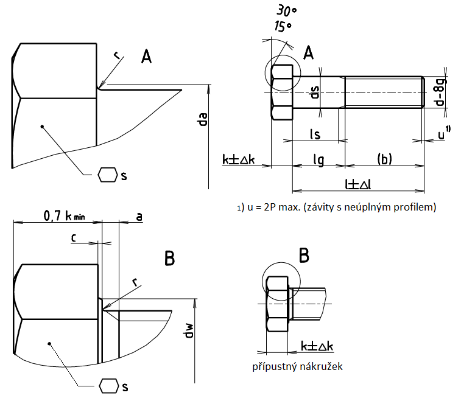

Příklad označení šroubu s metrickým závitem M12 a s délkou l=80mm, pevnostní třídy 4.6:
ŠROUB SE ŠESTIHRANNOU HLAVOU ISO 4016 – M12×80 – 4.6
| Materiál | Ocel | |
|---|---|---|
| Všeobecné požadavky | Mezinárodní norma | ISO 8992 |
| Mechanické vlastnosti | Pevnostní třída1) (materiál) | Pro d ≤ 39 mm: 3,6 4,6 4,8 |
| Pro d > 39 mm: podle dohody |
||
| Mezinárodní normy | Pro d ≤ 39 mm: ISO 898-1 |
|
| Pro d > 39 mm: podle dohody |
||
| Mezní rozměry, tolerance tvaru a polohy | Výrobní třída | C |
| Mezinárodní norma | ISO 4759-1 | |
| Povrch |
dle výroby Požadavky na elektrolyticky vyloučené povlaky viz ISO 4042 Jestliže je požadována jiná povrchová ochrana, musí být dohodnuta mezi dodavatelem a odběratelem. |
|
1) Značky pro pevnostní třídu podle ISO 898-1 mohou být použity pro závity jmenovitých průmerů přes 39 mm za předpokladu, že konečný výrobek vykazuje vlastnosti, které značce ISO 898-1 odpovídají.